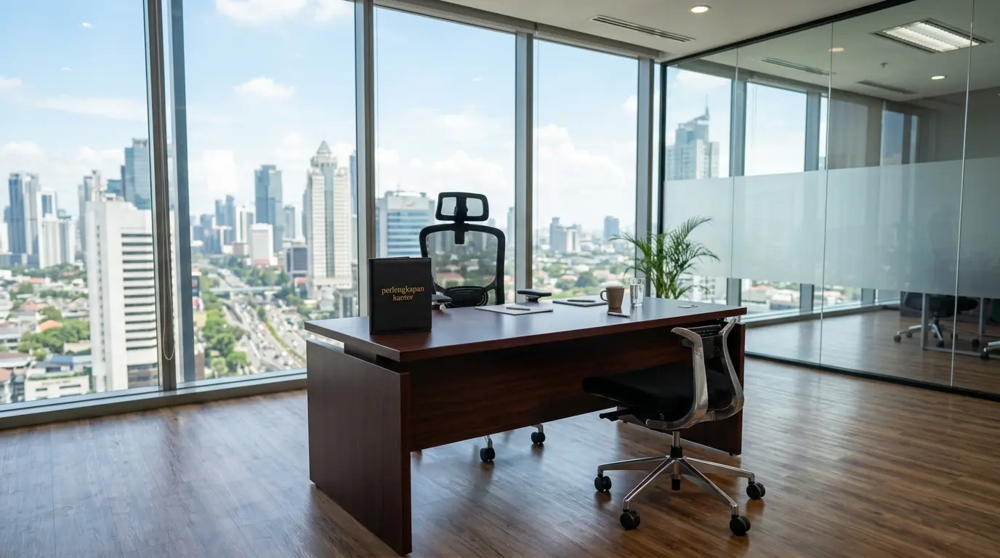

Mengapa Perusahaan Membutuhkan Rekomendasi Kursi Ergonomis Kantor Bergaransi 5 Tahun?
Perusahaan membutuhkan rekomendasi kursi ergonomis kantor bergaransi 5 tahun karena sarana duduk berstandar medis terbukti menjaga kesehatan tulang belakang karyawan, meningkatkan konsentrasi kerja, serta melindungi anggaran belanja perusahaan dari biaya penggantian furnitur yang cepat rusak. Berdasarkan data Indonesia Occupational Health Survey 2025-2026, penggunaan kursi kerja yang tidak ergonomis menyumbang 68,4% kasus keluhan nyeri punggung bawah (lower back pain) di kalangan pekerja kantoran. Laporan Corporate Furniture Lifecycle Study 2025 juga mencatat bahwa perusahaan yang memilih produk bergaransi resmi 5 tahun berhasil memangkas biaya pemeliharaan furnitur hingga 42% secara signifikan.
Memilih tempat duduk kerja tidak boleh sekadar melihat tampilan visual luar semata. Ketersediaan komponen yang dapat disesuaikan dengan dimensi tubuh pengguna menjadi kunci utama pencegahan cedera fisik harian. Oleh karena itu, bermitra dengan distributor resmi Perlengkapan Kantor yang menyalurkan sarana duduk bergaransi jangka panjang merupakan keputusan taktis untuk mendukung kesejahteraan dan produktivitas staf Anda.
Tabel perbandingan berikut memperlihatkan dampak penggunaan kursi kerja bergaransi versus kursi biasa:
| Parameter Evaluasi | Kursi Ergonomis Garansi 5 Tahun | Kursi Kantor Standar Non-Garansi |
|---|---|---|
| Penopang Pinggang (Lumbar) | Adjustable 3D (Mengikuti Postur) | Fixed / Tidak Ada Penopang |
| Ketahanan Komponen Hidrolik | Sertifikasi Class 4 (Tahan Lama) | Standar Biasa (Mudah Bocor) |
| Sirkulasi Udara Sandaran | High-Density Breathable Mesh | Busa Tebal Panas / Kain Biasa |
| Perlindungan Garansi Produk | 5 Tahun (Cover Sparepart) | Tanpa Garansi / Maksimal 3 Bulan |
- 68,4% kasus nyeri punggung bawah di perkantoran disebabkan oleh kursi yang tidak ergonomis.
- Garansi 5 tahun memangkas biaya pemeliharaan furnitur hingga 42%.
- Kursi ergonomis dengan lumbar support 3D menjaga kelengkungan alami tulang belakang.
Apa Saja Fitur Teknis Utama yang Wajib Ada pada Kursi Kerja Ergonomis?
Fitur teknis utama yang wajib ada pada kursi kerja ergonomis meliputi mekanisme hidrolik pengatur tinggi dudukan, penopang lumbar yang dapat digeser naik-turun, sandaran kepala (headrest) adjustable, serta sandaran tangan 3D yang dapat diatur ketinggian dan sudutnya. Keberadaan fitur-fitur ini memastikan bahwa kursi dapat disesuaikan dengan tinggi badan dan gaya duduk setiap individu.
Fitur krusial yang menentukan kualitas dudukan meliputi:
- Adjustable Lumbar Support: Penopang pinggang fleksibel yang menjaga kelengkungan alami tulang belakang.
- Gaslift Hydrolics Class 4: Tabung hidrolik berstandar keselamatan tinggi yang mampu menahan beban berat secara stabil.
- Synchronized Reclining Mechanism: Mampu mengunci kemiringan sandaran di berbagai sudut untuk posisi istirahat sejenak.
- Nylon Castors & Aluminum Base: Cakar kaki berbahan aluminium kokoh dengan roda nilon yang tidak menggores lantai.
- ✅ Lumbar support adjustable (naik-turun & maju-mundur).
- ✅ Gaslift Class 4 atau Class 3 untuk ketahanan hidrolik.
- ✅ Sandaran tangan 3D atau 4D.
- ✅ Sandaran kepala (headrest) adjustable.
- ✅ Roda nilon & base aluminium.
Bagaimana Pengaruh Postur Duduk Ergonomis Terhadap Produktivitas Kerja?
Pengaruh postur duduk ergonomis terhadap produktivitas kerja sangat besar karena postur tubuh yang netral melancarkan sirkulasi darah ke otak, mengurangi ketegangan otot leher, serta mencegah rasa kantuk akibat kelelahan fisik. Ketika karyawan duduk tanpa rasa sakit di area pinggang, fokus dan ketelitian dalam menyelesaikan tugas harian akan meningkat secara alami.
Penerapan standar kerja sehat di lingkungan perkantoran juga menciptakan budaya kerja yang positif. Fasilitas kerja yang memadai terbukti meningkatkan moral dan retensi staf di dalam organisasi.
- Meningkatkan konsentrasi dan ketelitian kerja.
- Mengurangi risiko cedera otot dan kelelahan fisik.
- Menciptakan budaya kerja yang positif dan sehat.
- Meningkatkan retensi karyawan.
Bagaimana Langkah Memesan Paket Kursi Kerja Kantor Melalui Distributor B2B?

Distributor Perlengkapan Kantor menyediakan rekomendasi kursi ergonomis berkualitas dengan garansi resmi 5 tahun.
Langkah memesan paket kursi kerja kantor melalui distributor B2B diawali dengan menentukan jumlah kebutuhan staf, memilih spesifikasi bahan sandaran, mengajukan permintaan penawaran harga grosir, serta melakukan uji coba sampel produk.
Tata cara pemesanan yang praktis mencakup:
- Evaluasi Kebutuhan Divisi: Menyesuaikan tipe kursi dengan intensitas kerja tiap divisi (staf, manajerial, atau eksekutif).
- Konsultasi Bersama Tim Ahli: Meminta rekomendasi tipe produk yang sesuai dengan anggaran belanja perusahaan.
- Pengajuan Penawaran B2B: Mengunci harga grosir dan kepastian tanggal pengiriman barang ke lokasi kantor.
- Fasilitas Perakitan Gratis: Memastikan vendor menyediakan tim teknis untuk pembongkaran dan perakitan kursi di tempat.
Untuk mewujudkan lingkungan kerja yang sehat dan produktif, hubungi distributor resmi Perlengkapan Kantor kami sekarang dan dapatkan penawaran harga grosir kursi ergonomis bergaransi resmi.
Apa Saja Kesalahan dalam Membeli Kursi Kerja Kantor?
Kesalahan dalam membeli kursi kerja kantor mencakup memilih kursi berdasarkan harga murah tanpa memperhatikan sertifikasi keselamatan hidrolik, mengabaikan garansi purna jual, serta memilih bahan sandaran yang menyimpan panas. Kursi tanpa penopang pinggang yang pas akan membuat pengguna membungkuk dan cepat merasa lelah.
Selain itu, tidak memperhitungkan daya tahan cakar kaki kursi sering kali membuat furnitur cepat patah saat menahan beban harian. Membeli pasokan melalui distributor resmi Perlengkapan Kantor menjamin Anda mendapatkan produk yang lolos uji ketahanan standar internasional.
- ❌ Memilih kursi hanya berdasarkan harga murah.
- ❌ Mengabaikan sertifikasi gaslift dan keamanan.
- ❌ Tidak memeriksa garansi purna jual.
- ❌ Memilih bahan sandaran yang menyimpan panas.
- ❌ Tidak menguji sampel kursi sebelum pembelian massal.
Pertanyaan Populer Seputar Rekomendasi Kursi Ergonomis Kantor
Kesimpulan Praktis
Memilih rekomendasi kursi ergonomis kantor bergaransi 5 tahun adalah langkah investasi strategis untuk meningkatkan produktivitas, menjaga kesehatan staf, dan mengamankan anggaran belanja inventaris perusahaan. Didukung oleh pasokan terpercaya dan jaminan garansi resmi dari Perlengkapan Kantor, seluruh kebutuhan furnitur kerja bisnis Anda siap terpenuhi secara sempurna.

Penulis: Ardhana Prasasta
Spesialis konten & konsultan furnitur tata ruang kantor di Perlengkapan Kantor. Berpengalaman dalam memberikan panduan solusi ergonomis, efisiensi ruang kerja, dan pengadaan perlengkapan kantor korporat.